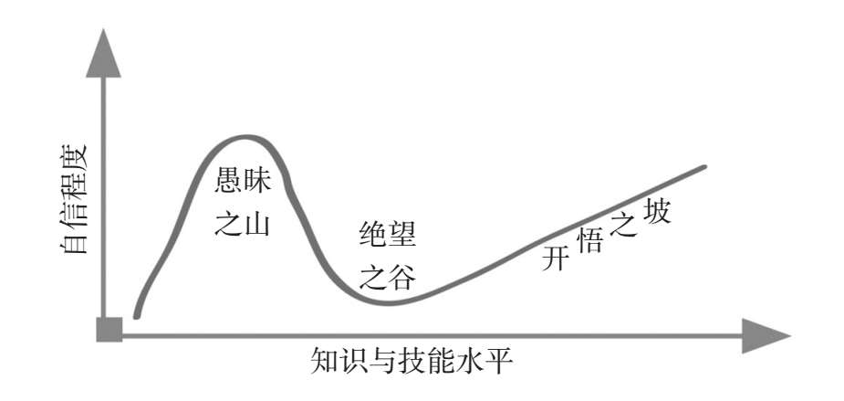

自接受教育开始，教育者便会告诉我们，“每个人都是特殊的，了解自己独有的学习方式不仅有助于我们正确看待自己，也有助于老师因材施教”。比如早在20世纪90年代，我国就有学者明确提出：“研究学生的学习风格，能够针对不同的学生使用不同的教学策略，从而更容易激发学生的学习潜能，真正做到因材施教。”我相信大部分人都相信且从未质疑过这个学习理念。
一项调查显示，95%的人之所以乐于进行各种类型的心理测试或职业测试，其目的便是希望更多地了解自己——了解自己究竟是怎样一个人，适合怎样的学习方法和做事模式，用怎样的途径才能更容易地获得成功。比如，如果通过测试，你发现自己的兴趣特征倾向于研究与操作型，那么说明你不太适合从事沟通类的工作；比如，你在业余时间更喜欢读书而非与其他人交谈，那么上课时总是分心走神且效率低下也许并非是你的错，很可能只是因为你更擅长通过文字进行学习而已……在感到枯燥、茫然或遭遇挫败时，人们总是希望能够借助某种理论加深自我认知，同时为自己指引捷径。
当下，学习界最流行的自我认知工具便是学习风格理论。多年来，我们身边很多人都相信学习风格的存在，并且一直致力于搞清楚自己到底是文字学习者、图像学习者还是听觉学习者。为了真正地认识自己，找到适合自己的学习方式，他们不断从各种著作和教育专家那里探求学习风格的各种类型，并且坚信自己之所以不擅长某类领域学习的原因，就是因为尚未找到一种有效的风格。他们坚信，如果能挖掘到与自己匹配的学习风格，就能瞬间开启学霸模式。
但是，要想进行高效的学习，我们真的可以从学习风格的理论中真正了解自己并且受益吗？每个人真的都有属于自己擅长的学习风格吗？
知其然才能知其所以然，我们首先需要详细了解，学习风格理论到底是什么？究竟有哪些学习风格？
事实上，专家们一直试图将学习风格系统地分类，并且由此产生了很多不同的版本。比如美国的心理学家吉尔福特就提出过一种智力结构理论，他把学习风格分为图形型、符号型和语义型；另一位美国心理学家斯腾伯格打造的智力模型，又把学习风格划分为分析型、创新型、实践型。英国的心理学领域也不甘寂寞，在2004年的一次调查中，英国学习与技能研究中心一口气评选了70多种学习风格理论。在这些理论中，最有名的就是新西兰教育心理学家尼尔·弗莱明提出的VARK模型。
VARK模型将学习风格归纳为以下四大类：
• V（Visual），代表视觉型学习风格，喜欢这种学习风格的人往往更擅长通过视觉图像进行学习；
• A（Aural），代表听觉型学习风格，这类风格的支持者更擅长通过听觉接受信息；
• R（Read/Write），代表读写型学习风格，适合那些更擅长通过记笔记进行学习的学习者；
• K（Kinesthetic），代表动手实践型学习风格，适合这种风格的人最擅长通过亲自动手、亲身实践来学习。
这听起来是不是很有道理，也符合因材施教的教育理念？我以前也十分推崇这种学习理论，甚至想把它积极地分享给大家。之前有个朋友想提高自己的英语水平，苦于找不到合适的方法，便向我求助，我就建议他去做做这个VARK模型测试，然后根据测试结果来制定自己的学习模式。如果测试结果显示他是个听觉型学习者，那么他就可以通过听原版电影的方式来学习；如果测出他是读写型学习者，那么他就要在记笔记、看英文资料这些方面下功夫；如果测出他是动手实践型的学习者，那么与别人进行口语交流才是最有效的学习方式。
乍一听，这样的建议不仅很酷，也挺有道理的：每个人都可以根据自己的性格和特点使用不同的学习方法，肯定比统一的填鸭式教育要高效。正是因为这种方法听起来太美好，所以没有人怀疑过VARK模型到底科不科学。
当然，我之前也对此深信不疑，直到有一天无意中翻阅《认知天性》这本书，才发现了学习风格理论的真相。《认知天性》中描述了大量研究者对各种各样的学习风格的测试案例，最后这些学者得出了一个令人震惊的真相：所谓的学习风格实际上并不存在，所有那些让你去挖掘自己学习风格的建议，其实都不靠谱。学习风格理论在学习领域持续了几十年，虽然很多人也对此深信不疑，但它的存在以及科学性却被证明是一个谎言。
在这些测试中，最有证明力的莫过于2008年那次联合大调查。当时，有4位认知心理学家对学习风格理论产生了怀疑，他们分别是哈罗德·帕什勒、马克·麦克丹尼尔、道格·罗勒和鲍勃·比约克。这4位敢于追求真理的心理学家决心从科学的角度去验证，各种学习理论到底有没有科学证据，以及所谓的学习风格偏好究竟能不能增进学习效果。
为了让调查的结论更严谨，这4位心理学家从不同的领域选择了一些志愿者，然后按照学习风格理论的模型把他们分为不同的风格组。最后，研究者按照每人对应的风格去教授他们，再去评估这样做的效果是否会更好。
比如他们曾经做过背英语单词的实验，具体方法是把志愿者分成两组：一组只能去看纸上的单词，另一组只能听别人念单词，然后两组成员交换学习方式。如果学习风格真的存在的话，那么视觉型学习者用看单词的方法肯定比听单词的效果更好，而听觉型学习者应该能通过听读记住更多的单词。
但是测试结果显示，无论用什么方式学习，这些志愿者记住的单词量几乎都是一样的，差别根本不大。随后，这4位心理学家又在不同的场景中对不同年龄的人群再次展开了测试，而且采用了各种差异化的方式、选取了各种不同分类的风格理论，最后都得到了一样的结论：没有任何证据证明你采用和自己学习风格相符的学习方式就可以造成学习效果上的差异。
那么，如果不同的学习风格对学习效果几乎没有影响的话，又是什么因素在真正左右着我们的学习效果呢？
研究者发现，我们所学到的东西大部分是依赖其意义储存在记忆中的，与学习风格无关。也就是说，你能不能学会某些知识，是依靠你能否理解它的意义来决定的，至于你是通过看图像还是听声音，是通过抽象的理解还是通过具体的例子去学习的，这些因素其实都毫无关系。
一个国际象棋棋手的记忆比赛案例可以充分印证这个结论。1973年，诺贝尔经济学奖得主、人工智能研究的开拓者赫伯特·西蒙和威廉·蔡斯在研究国际象棋大师的成长经历时，对棋手们做了一项研究。他们先是将比赛过程中的棋盘图像展示给棋手观看，5秒钟之后便马上要求棋手复述图片上棋子的位置。结果，赫伯特和威廉发现，专业棋手大多都能记住20多个棋子的位置，而新手大多只能记住4个棋子的位置。
为什么新手和专业棋手之间会有这么大的差异呢？难道专业棋手的视觉记忆都特别好吗？事实显然不会这么简单。赫伯特和威廉提出了一个大胆的猜想：专业棋手能记住更多的棋子位置，是因为他们拥有更多的下棋经验和知识，也就是说在同一个棋盘里，专业棋手可以看见棋盘每一步棋的意义，他知道对手为什么把棋子摆放到这些位置上；但是新手就看不出这些意义，所以他记不住。
为了验证这个想法，赫伯特和威廉做了跟进研究，他们继续给棋手观看了几个随机的棋盘布局，也就是棋盘上的棋子是随意摆放的，没有任何意义。这一次，专业棋手和新手的表现所差无几，大家都记不住棋子的位置了。这次实验有力地证明了赫伯特和威廉的推论是正确的：我们输入信息、储存信息、理解信息，这些过程其实都依赖于信息的意义，它和你更擅长听、更擅长读，还是更擅长写等这些感官优势并无关联，这些因素对我们的学习在本质上影响不大。
可见，掌握知识的最重要因素是理解，是把知识与经验相结合。所以，在《认知天性》这本书里，心理学家给我们的建议是：与其去关注你在哪些感官上更有特长，倒不如去关注你哪方面学得不好，因为学不好的领域恰好暴露了你的能力结构。
但是，和看不见自己的特长一样，很多人也看不见自己的缺陷。更准确地说，我们几乎都会经历一个看不见自己薄弱之处的愚昧时期，以至于我们在这段时间内心中总是激荡着一股超人版的自信。
要解释这个现象，我们就要从一个心理学现象说起。美国康奈尔大学的两位心理学家邓宁和克鲁格通过对人们阅读（主要是逻辑分析文字内容的能力，比如此时此刻正在读这本书的你是如何分析和理解这段文字的）、开车、下棋、打网球等各种技能的研究发现：人们总是无法正确、全面地认识到自身的不足，更别提及时弥补自身的不足之处了。人们的自信程度与其实际掌握的知识技能水平之间的偏差往往会形成一个从愚昧到绝望、再到开悟的曲线，这条认知曲线也被称为著名的达克效应（Dunning-Kruger Effect）。

达克效应的认知曲线由3段组成，分别代表着3种自我认知阶段：愚昧之山即未知的未知，是指我们不知道自己不知道；绝望之谷即已知的未知，指我们知道有些事情自己不知道；开悟之坡即已知的已知，指有的事情我们知道自己知道。遗憾的是，通常有95%的人都处于“不知道自己不知道却自以为是”的状态，这也是为什么碌碌无为的人在社会上占大多数的原因。视而不见，不知道自己的学习缺陷究竟在何处，将使我们从根本上失去升级自我认知的可能性。
那么，如何才能跳出自身，正确识别自己的学习过程在哪些地方存在问题呢？接下来，我要向各位介绍另外一个心理学概念：元认知。元认知是美国心理学家J.H.弗拉维尔在1976年提出的概念，意思是“认知的认知”。简单来讲，就是我们“对自己思考过程的认知与理解”。它就像是我们大脑里的安全卫士，不断地审视大脑产生的每个想法，并进一步判断其是否正确，从而决定如何应对、如何升级。
在不具备元认知能力之前，我们大脑的运行方式很可能是这样的：“发生了事件A→我们有了反应B。”
举个简单的例子。在阅读时，我们可能会发出这样的感叹：“这篇文章让人看得一会儿哭一会儿笑，情难自禁，写得实在太好了！”
但如果我们的元认知能力被激活了之后，大脑的运行方式便会变成：“发生了事件A→我有了反应B→我为什么会有反应B？反应B是对的吗？→C好像是更适合的反应→于是，我有了反应C。”
还是以阅读一篇情节曲折的文章为例，此时我们更有可能的思考方式是：“为什么我会被感动？这个情节合理吗？情节好就等于文章好吗？情节本身是不是有待考证？作者的写作水平也许不错，但这篇文章的质量有待商榷。”
我们的大脑产生了“纠错机制”，大脑里竟然出现了两个甚至更多个声音，它们在互相辩论，彼此说服，而我们自己就像是这场小型辩论赛的裁判，观看着这场争斗，最终选择获胜的那位“选手”，做出客观的认知反应。
我个人在学习英语的过程中也体验过元认知的巨大作用。最初决定自学英语时，我曾经在背诵单词的环节上遭遇了严重的挫败感。除了之前背诵过的单词总是会被遗忘之外，在进行阅读练习时，我也经常遇到许多生词。若要顺利将一篇英语新闻读完，我需要不断停下并翻阅字典，以至于因为查字典查到“怀疑人生”，导致我无数次发出“我真的不擅长记单词，更不擅长学习外语”的感叹。感叹之余，我也被生词虐到节节败退，甚至多次想放弃学习。
这种“下定决心—开始学习—遇到难题—认为自己不擅长或风格不对—果断放弃”的学习状态，我相信在很多人身上都有体现。我们太习惯在面对问题的时候表现得如此不成熟，将失败的原因放到自己身上。而我们一旦在遇到学习问题的时候学会有意使用元认知，那么就很有可能做出与之前“随时放弃”截然不同的行动。
在了解过元认知的概念之后，我再一次开启了英语的自学之旅。和之前一样，我又在背诵单词和阅读时遇到了同样的问题，但这一次，我开始停下来思考：“虽然不认识这个单词，但是现在跳过它真的会影响我继续阅读这篇文章吗？”“没有理解某一段的内容，难道值得我因此放弃英语学习吗？”“生词难关是只会发生在我个人身上的问题，还是大部分人在学习英语时都会遇到的普遍问题？”
思维的完整过程一旦被清晰地看见，我就让自己避免再像从前一样走上“愚昧之山”。所以，当我们想要正确认识自己的真实水平，发现学习问题究竟出现在哪里时，与其思考眼前的学习现状存在什么难题，不如思考自己的思考方式，也就是要在学习过程中养成自我观察和思考的习惯，一边学习一边观察自己的学习过程，让这种自我观察帮助我们认识到真正的问题在哪里，及时调整学习策略，避免自暴自弃。
“思考我们的思考”“观察自己的学习过程”，这些方法听起来有点儿玄妙，但这种“跳出自己”来观察自己思考状态的行为其实是一种非常成熟的自我认知方法。相比那些选择逃避真实存在的问题、一味想发现自己的学习风格、希望发挥所长的人来说，一个具备元认知能力、对自己的学习情况了如指掌的学习者，才能更有侧重，学得轻松。